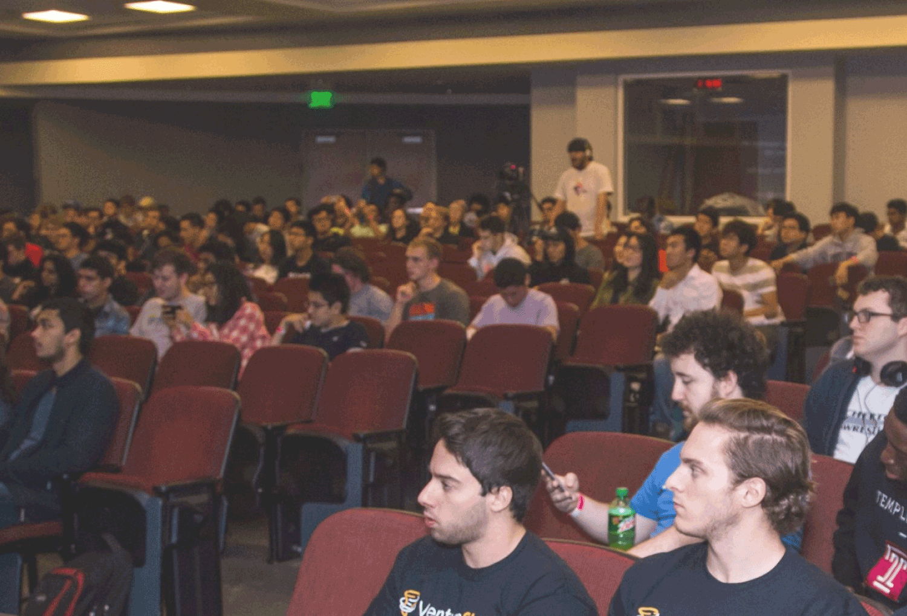
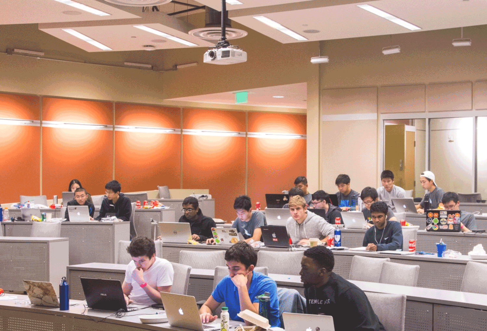
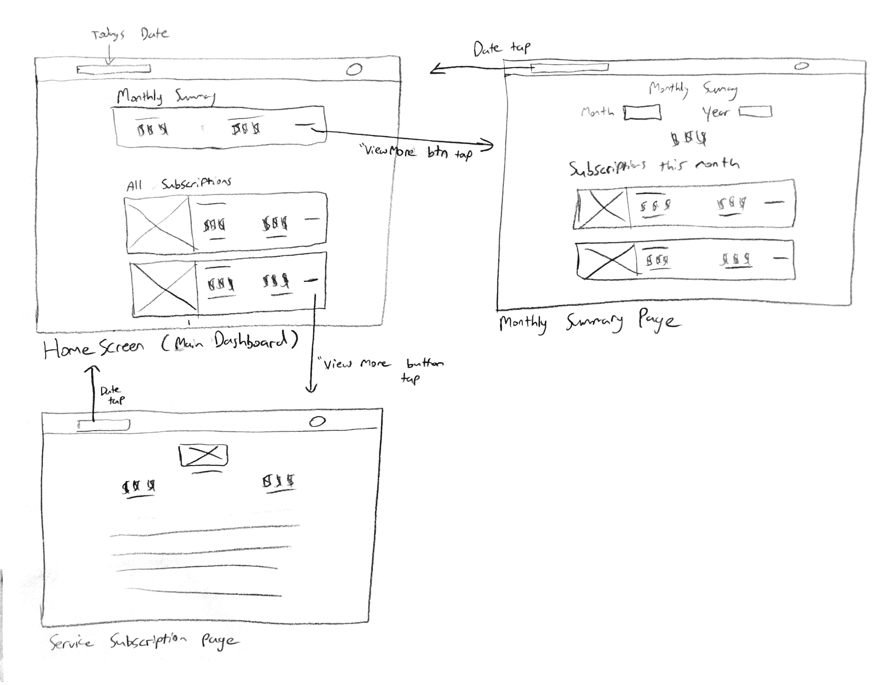
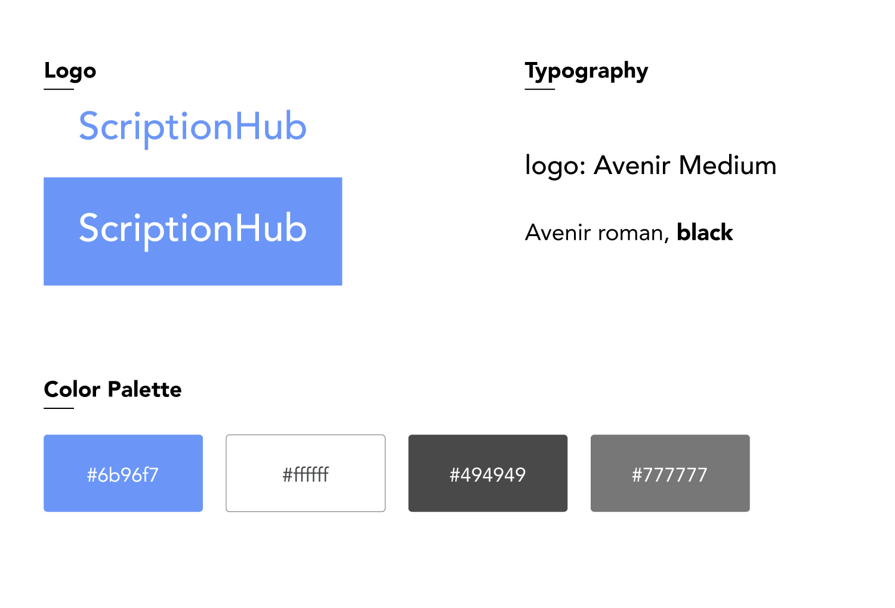
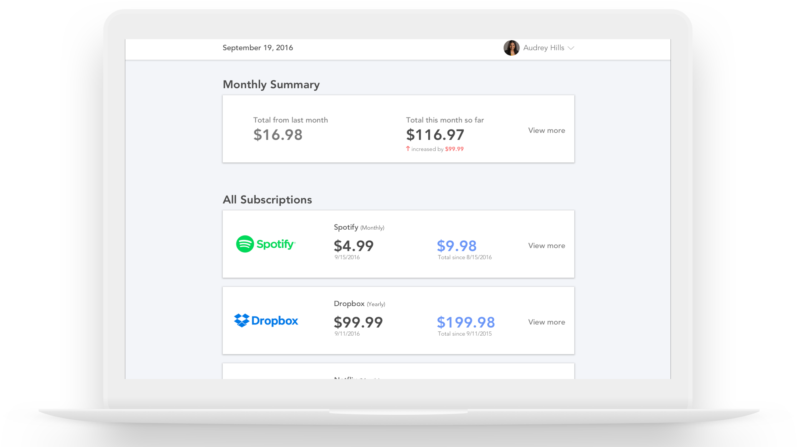
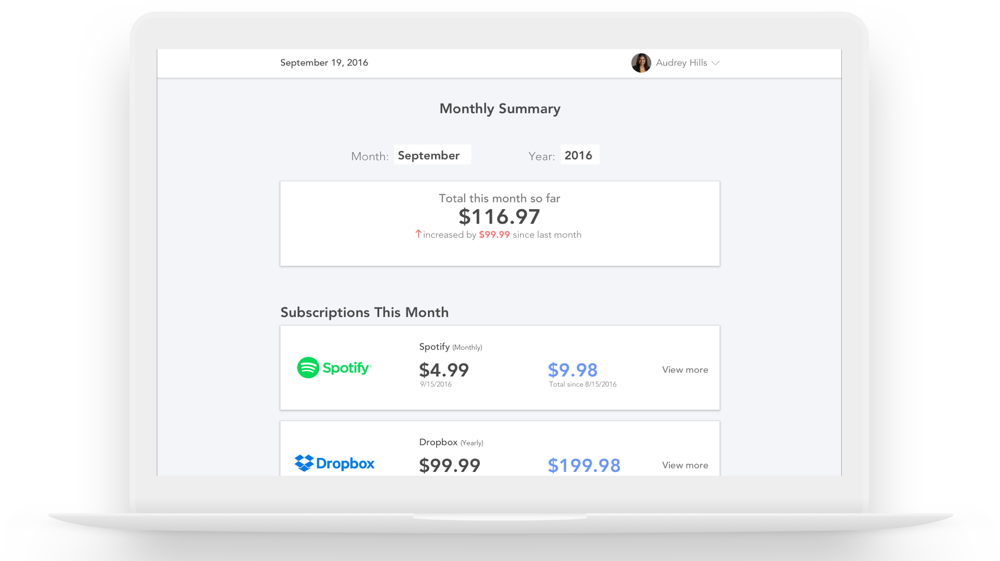
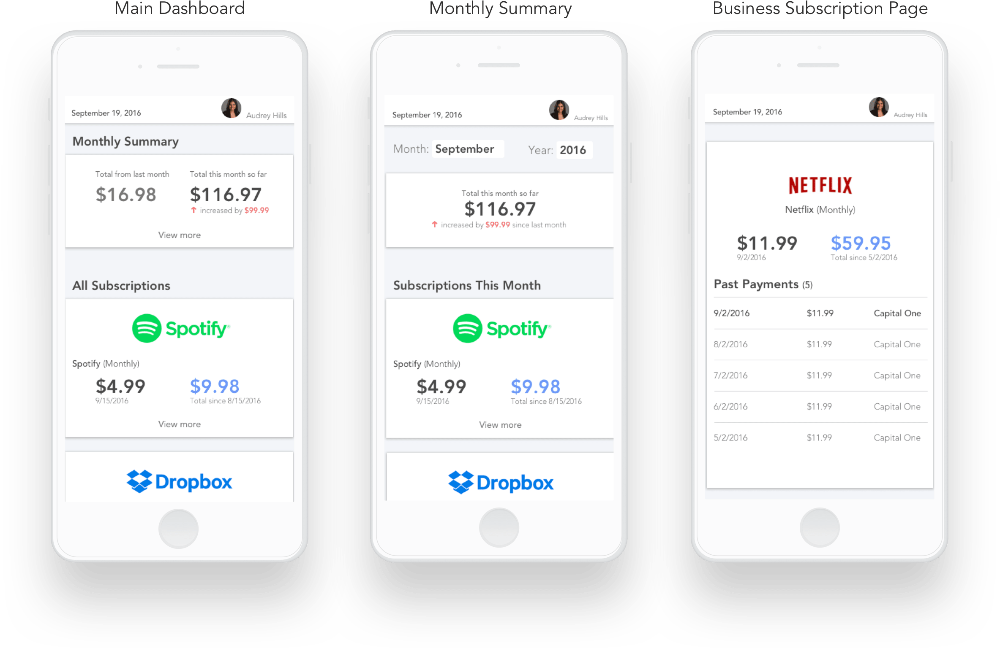

The Beginning
Like most people, my 2 friends and I came into the hackathon hungry and excited, but we didn’t know what to build. We took our seats for opening ceremonies and one of my friends got an email notifying him of his Dropbox Pro account renewal. That’s when he said that he’d wish there was a way to manage his subscriptions. And that’s where we got the idea for ScriptionHub!
The Problem We Were Trying to Solve
There are many money management apps and banking apps out there that help people keep track of their spendings. However, none of them provide an easy way to manage their recurring payments. This is problematic because people lose track of their spendings. To view the past subscription orders, they would have to go to the respective businesses’ website, and sometimes, their website would not even display it. This is very tedious and annoying; the fact that they have to jump around websites just to view each individual subscription.
Initial Problem We Faced Along the Way
The problem we faced from the start was that “Given the 24 hour time constraint of the hackathon, how do we prioritize the steps in product design to ensure that this product is valuable - and if it is, how do we build it in an efficient manner?”
This was my first time doing product design at a hackathon so I talked to a UX Designer at MissionData (one of the sponsors) about my current dilemma. He gave me some wonderful advice, in which his main point was for me to not be afraid to trust my intuition. I came up with the following steps for myself to make sure our product would be something worth using:
- Start off by interviewing a few people to validate our ideas
- Analyze the research findings
- Present analyzation to the team and come up with a solution
- Make quick low fidelity mockups of the screens
- Come up with a name and visual identity
- Make high fidelity mockups
- Prototype
Interviews and Analyzation
-
How often do you check your spendings and how do you do it?
People check their spendings 5-10 times a week. 4 out of the 5 people we interviewed said that they check via their bank’s app. They do quick checks on their mobile devices, however, if they want to some more in-depth tracking or to fix some issues, they go on their desktop. -
How do you track your subscriptions?
The 25 year old SWE keeps track of them himself via Google Sheets. The rest either tracks their subscriptions via their bank statements, which is unorganized, or goes to the businesses website under their account settings. One of the hackers mentioned a new startup called Truebill that is a software to keep track and manage all of your subscriptions. Once we heard of this, our team quickly googled Truebill and jumped to their website. They were still in beta at the time so we could not test out their software. Because of this, we still stuck with building out our product. -
Would it make your life easier if you had a platform that helps you keep track of all your recurring payments? How so?
All of them said yes. It would make their lives easier because they wouldn’t have to go to multiple websites and/or apps to manage their subscriptions. It would all be on one centralized location. -
Would you use said platform? Why or why not?
2 out of the 5 were uneasy about using another banking app. They said they have used so many in the past, it feels uncomfortable connecting their bank to a new software. The rest said yes, they would love to use this app because it would be easier to manage their subscriptions. -
How do you cancel your subscriptions?
Everyone cancels their subscriptions by going to the businesses website.
The most important takeaways are that:
- People are annoyed by having to go to the respective businesses’ website to manage their recurring payments or having an unorganized view of their subscriptions on their bank statements.
- People use their mobile devices for quick tracking of their spendings and desktops for more in depth checking.
- People want a software platform that is trustworthy.
- People want a more pleasant and easier way of cancelling their subscriptions.
The Solution
To address the above needs, we would use Capital One’s API (they released one for the hackathon) to develop an application to help people keep track of their subscription payments and cancel them anytime, all on one platform. The app needs to have simple yet strong visual design to evoke trust and assurance. We would be developing a responsive web application so people can check on both desktop and mobile devices. We didn’t plan on creating a mobile app as well because we knew we wouldn’t have enough time.
Another Problem We Faced
We quickly realized that canceling subscriptions is not as simple as the press of a third party button. We thought we could do something on the back end where if you tap a cancel button of a subscription, it would connect to the service’s website, specifically the account settings part, and cancel, all in the span of a few seconds done under the hood. This ended up being way to technically complex, as there are millions of services out there. We ended up not implementing the feature to cancel a subscription and just branded ourselves as an app to manage all of your subscriptions.
Low Fidelity Wireframe
Establishing our Name and Visual Design
We didn’t want to waste too much time on this part as we still had a lot of things to do. The 3 of us sat down for about 20 min to come up with a name. We played around with so many words and ended up with ScriptionHub. For the logo, it was nothing fancy, just a logotype using the Avenir typeface. After playing around with a few different color schemes, we ended up going with blue and white. All of this is to convey trust and authenticity with this application so people will feel safer using this app.
High Fidelity Mockups (Web)
I utilized cards for the subscriptions to allow the user to better classify and group the different types of information with each other. I also toned down on the use of color to add extra emphasis on the logos of the services to provide an easier browsing experience for the user.
Main dashboard of the app

Monthly Summary page

Business subscription page
High Fidelity Mockups (Mobile)

Prototype
Key Takeaways
In the end, we did not end up finish building the full product in time. Even though we didn't finish, I'm still very proud of the work my team and I have accomplished in the 24 hours. We gained new knowledge on how to manage our time along with prioritizing the different tasks we had, given the time constraint of the hackathon. This was my first time designing a product at a hackathon and it was a lovely experience for me, as I was designing on the clock; which pushed me to work faster and more efficient.